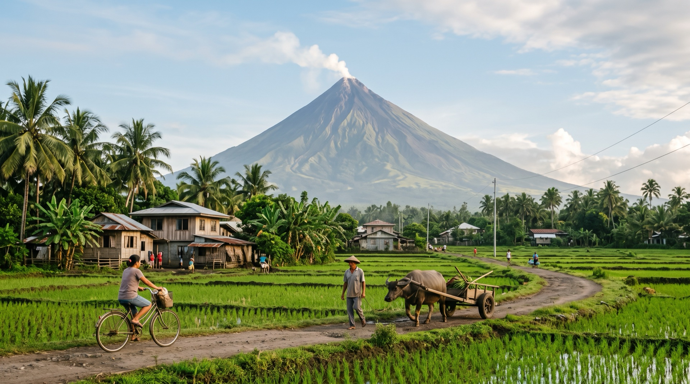
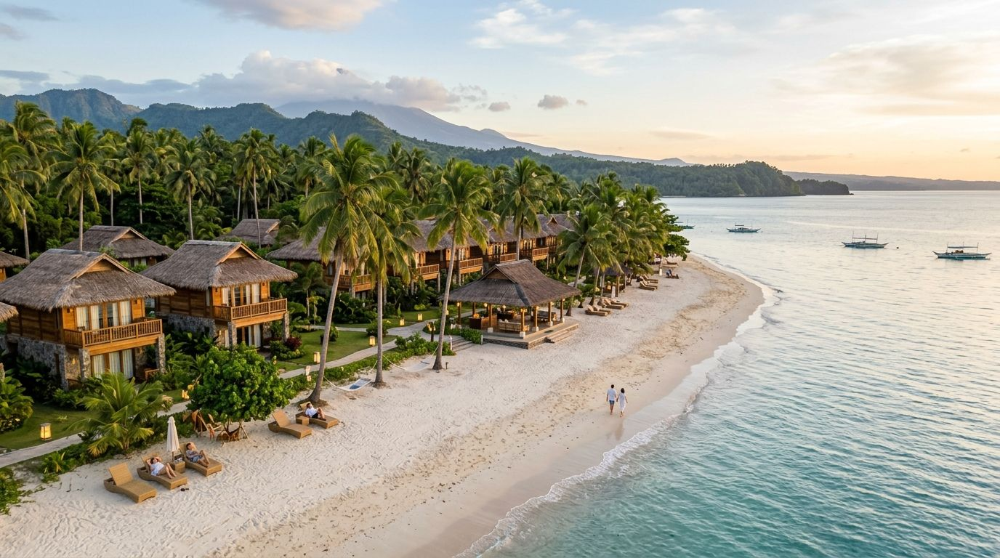
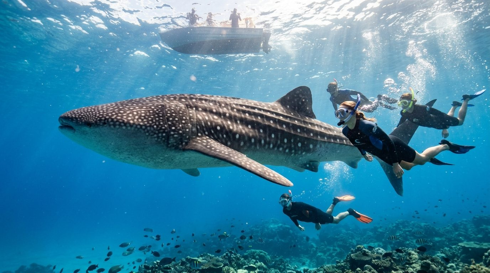

World’s Most Perfect Volcano
Rising 2,463 meters above the Gulf of Albay, Mount Mayon captivates travelers with its flawless symmetry, rich folklore, volcanic adventure trails, and warm Bicolano hospitality.

Volcanic Lava ATV Trails
Ride high-powered 4x4 ATVs through rivers, boulders, and black lava flow trails right up to the 2006 Mayon lava wall.
Cagsawa Church Ruins
Photograph the iconic 18th-century stone church belfry standing in front of Mayon's majestic volcanic cone silhouette.

Donsol Whale Shark Sanctuary
Take a day trip to nearby Donsol to ethically swim alongside gentle giant whale sharks in their natural ocean environment.
Signature Mayon Adventures
Private Mayon Black Lava Wall 4x4 ATV Safari
Experience an adrenaline-filled guided ATV ride across gushing volcanic streams and rugged terrain leading directly to Mayon’s helipad and black lava lookout point.
Inquire About This Safari →
Private Donsol Whale Shark Snorkel & Firefly River Cruise
Snorkel alongside wild whale sharks guided by licensed BIO marine spotters, followed by an evening boat cruise down Ogod River surrounded by thousands of glowing fireflies.
Inquire About This Tour →Handpicked Mayon & Bicol Resorts
Misibis Bay Resort
A 5-star private island luxury playground featuring beachfront pool villas, helicopter tours, jet skis, and views of Mount Mayon.
Inquire Hotel Booking →The Oriental Legazpi
Hilltop resort offering majestic unobstructed vistas of Mount Mayon, infinity pool deck, fine Bicolano dining, and luxury spa.
Inquire Hotel Booking →Mayon Concierge Guide
Getting There
Fly into Bicol International Airport (LGP) in Daraga, Albay directly from Manila (1 hr flight). Private chauffeured airport transfers included.
Best Season
January through May offers clear volcanic cone views, pleasant ATV trail conditions, and prime whale shark sightings in nearby Donsol.
Gastronomy
Indulge in Bicol Express (pork cooked in coconut milk and bird's eye chilies), Laing (taro leaves in coconut cream), and chili ice cream.
Concierge Tip
Plan your ATV tour for early morning (7:00 AM) to catch Mount Mayon before cloud cover settles around the peak.